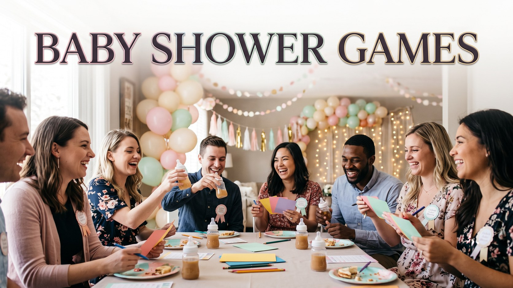

Baby Shower Games That Guests Actually Enjoy
Published October 10, 2026 · Updated October 10, 2026 · By EventBuzz Team

Every host wants guests who laugh, mingle, and leave saying that was genuinely fun. Baby shower games get a mixed reputation because bad ones embarrass people or drag on. The good ones are simple to explain, quick to play, and focused on the parents and baby. Here are ten games guests actually enjoy, each with clear rules and what you need. Choose four or five, spread them between food and gifts, and let one cheerful host explain each in under a minute.
1. Guess the Baby’s Arrival
Rules: Guests write their name beside a calendar date, a predicted weight and boy or girl if the gender is a surprise. The card or poster is kept by the family, and the closest guess wins after the birth, which extends the fun for weeks. You need: a printed calendar page or poster board, pens and a small envelope for predictions. This game runs itself in the background, so place it near the entrance where guests naturally pause.
2. Baby Photo Match
Rules: Collect a baby photo from each guest beforehand and pin them numbered on a board. Guests guess who each baby is. Reveal answers near the end; the sweetest chaos comes when grandma’s baby picture fools everyone. You need: printed photos, a board, paper slips and pens. Ask for photos with the invitation.
3. The Price Guessing Game
Rules: Display eight to ten real baby items, like nappies, wipes, a bottle and socks. Guests guess the total price without going over; closest wins, and the parents keep every item. You need: the items, hidden price tags, guess cards and pens. Practical, funny, and the shopping doubles as a gift.
4. Nappy Changing Race
Rules: Two volunteers race to change a nappy on a doll: undress, wipe, fasten the fresh nappy, dress again. Blindfold confident dads for the final round if the room is brave. You need: two dolls, nappies, wipes and doll clothes. Let the mom to be judge the neatest result, not just the fastest.
5. Baby Word Scramble
Rules: Hand out scrambled baby words, like bottle, blanket and lullaby. Set a five minute timer; most correct answers wins. You need: printed sheets, pens and a timer. Perfect while food is served, since guests play seated and grandparents join at their own pace.
6. Do Not Say Baby
Rules: Each guest gets a pin on arrival and may not say the word baby. Anyone caught loses their pin to the catcher; most pins at gift time wins. You need: safety pins or stickers. It breaks the ice all afternoon as guests invent phrases like the tiny new person to dodge the trap.
7. Wishes and Advice Cards
Rules: Guests complete prompt cards: a wish for the baby, advice for the parents, a prediction for the future. Read some aloud, or save them for the parents to open on a tired night. You need: prompt cards, pens and a pretty jar. Families often call these the most treasured keepsake of the shower.
8. Bottle Drinking Race
Rules: Fill baby bottles with juice and race to finish first. It looks far easier than it is, which is why the photos are priceless. You need: clean bottles and a mild drink. Keep it optional for willing volunteers only.
9. Baby Bingo During Gifts
Rules: Give guests bingo cards printed with likely gifts: blanket, bottle, socks, toy, book. As presents open, they mark squares; first full row wins. You need: printed cards and pens. It turns long gift opening into the most attentive part of the day.
10. Guess the Belly Size
Rules: Guests cut a length of ribbon or string they believe matches the mom to be’s belly. The closest length, compared gently and with her cheerful permission, wins. You need: ribbon or string and scissors. Always ask the mom to be in advance if she is comfortable with this classic; if in doubt, guess the size of a teddy bear’s belly instead and keep the laughter just as loud.
Small Prize Ideas
Prizes should be tiny, sweet and useful: candles, hand cream, chocolates, lip balm, notebooks or tea, wrapped in your theme colours. Buy one or two extras for surprise categories like funniest advice card, so more guests share the winning feeling.
Frequently Asked Questions
How many games should a baby shower have?
Four or five is the sweet spot for a two to three hour party. More than that starts to feel like a schedule instead of a celebration, and guests need time to eat and chat.
How do I include guests who are shy?
Mix active games with seated paper games and background games like Do Not Say Baby, so everyone can join at their comfort level. Never force a guest into a spotlight game.
When should games be played during the shower?
Start one easy game as guests arrive, play the lively games before food, use paper games during eating, and save Baby Bingo for gift opening. End with the sweet wishes cards.
What prizes do guests actually like?
Small luxuries win every time: candles, chocolates, hand cream, tea or pretty notebooks. Match the wrapping to your theme colours for an expensive looking finish at a tiny cost.
Can these games work for a large shower?
Yes. For big groups favour paper games, background games and bingo, which scale to any number, and run race style games with a few volunteers while everyone else cheers.
Conclusion
Great baby shower games are really just excuses for people who love the parents to laugh together. Pick a handful, explain them quickly, hand out tiny prizes generously, and let the mom to be shine in the middle of it all.
Happy hosting, may your shower echo with laughter from the first game to the last goodbye.